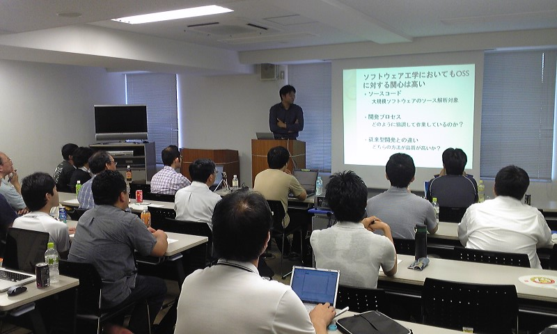
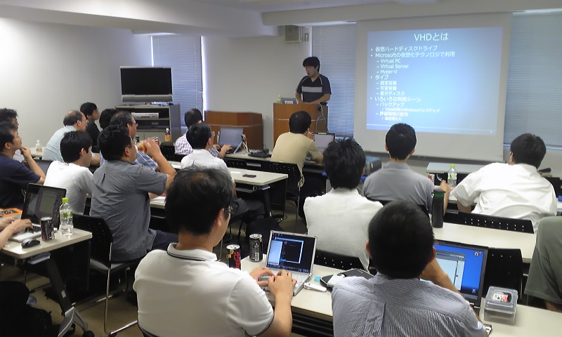

岡山オープンソース技術研究会 ／ 第10回 - オープンラボ岡山
- 終了しました。
?開催風景
■皆さんのお勧め本
■晴田さん
■天嵜さん

■若林さん
■きよくらさん


■白石さん
?収支報告
<勉強会> [収入] 参加費（23名、内講師5名） 9,000 ------------------------- 収入合計：9,000 [支出] 会場費 3,300（午前、午後、プロジェクタ含む） ------------------------- 支出合計：3,300 --------------------------------------- 収入合計ー支出合計：5,700 <懇親会> [収入] 懇親会費（13名） 55,000 ------------------------- 収入合計：55,000 [支出] 懇親会費 53,960 ------------------------- 支出合計：53,960 --------------------------------------- 収入合計ー支出合計：1,040 <合計> 前回繰り越し -7,134（ひらが負担） 勉強会 5,700 懇親会 1,040 --------------------------------------- 合計 -394
?参加申し込み方法
ガウディ本読書会（午前中）：
http://atnd.org/events/5890
勉強会（午後）：
http://atnd.org/events/5801
公式懇親会（お酒を飲む人向け）：
http://atnd.org/events/5891
非公式懇親会（お酒を飲まない人向け）：
http://atnd.org/events/5892
?詳細
オープンラボ岡山 オープンラボ岡山とは、岡山周辺の技術者のための勉強会プラットフォームとして、 勉強会や読書会の場を提供するための組織です。勉強会や読書会を開催したい方、 参加したい方が簡単に集まることの出来る場にしたいと考えています。運営委員は 全員ボランティアで、それぞれが勉強会や読書会の主催者でもあります。興味のあ る方は是非とも一緒にやりましょう。 ■名称： 第10回 オープンラボ岡山 ■参加申し込み方法 ガウディ本読書会（午前中）： http://atnd.org/events/5890 勉強会（午後）： http://atnd.org/events/5801 公式懇親会（お酒を飲む人向け）： http://atnd.org/events/5891 非公式懇親会（お酒を飲まない人向け）： http://atnd.org/events/5892 ■参加費： 500円 ■開催日時： 2010年7月17日（土曜日） 13:00～18:00 ■開催場所： きらめきプラザ（２階の「ゆうあいセンター」研修室１） http://www.kirameki-plz.com/gaiyou.html ■主催: 岡山県立大学アクティブキャンパス事業「岡山オープンソース技術研究会」 オープンラボ岡山 実行委員会 ■共催： 岡山Javaユーザ会( http://java.okaya.ma/ ) 瀬戸内Linuxユーザ会（ http://www.stlug.org/ ) LinuxKernelHackJAPAN( http://hira-consulting.com/wiki ) オープンセミナー＠岡山実行委員会( http://openseminar.okaya.ma/ ) 日本PostgreSQLユーザ会 中国支部( http://www.postgresql.jp/ ) ---------------------------------------------------------------------- 【タイトル】自己紹介タイム 【発表時間】20分 【タイトル】フリーソフトへのこだわり -- 出射氏を偲んで 【発表者名】Qchan（晴田和夫）さん 【発表時間】30分 【概要】フリーソフト界の巨星「出射厚氏」から学んだこと ・プログラミングの楽しさ ・フリーソフトへのこだわり ・プログラマーとして大切なこと 【タイトル】オープンソースとソフトウエアエンジニアリング 【発表者名】天嵜聡介さん（岡山県立大学） 【発表時間】 【タイトル】未定 【発表者名】若林さん 【発表時間】20分 【タイトル】Windows7とかのVHDブートの話（仮） 【発表者名】きよくらさん 【発表時間】30分 【タイトル】Small Basic 【発表者名】きよくらさん 【発表時間】20～30分 【タイトル】ITSS2010参加記 【発表者名】白石啓一（香川高等専門学校） 【発表時間】20～30分 【タイトル】ハッピーアワー 【発表時間】～18:00 【概要】 お菓子を食べながらみんなでリラックスして雑談したり、 講師に質問したりする時間です。
Copyright(C)2009 オープンラボ岡山運営委員会 All rights reserved.